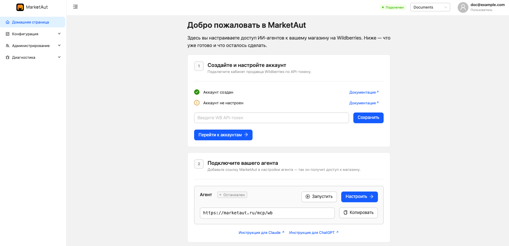
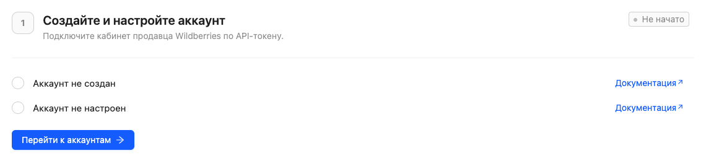
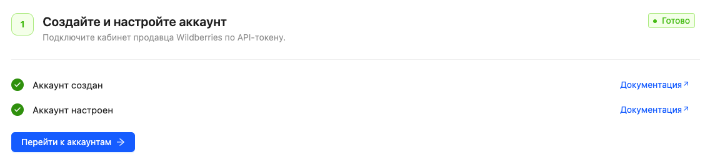
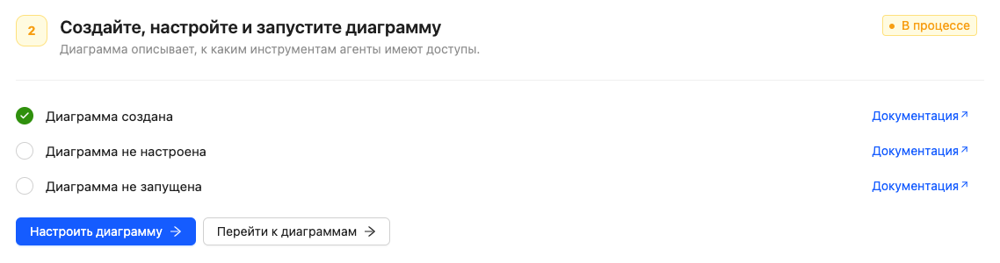
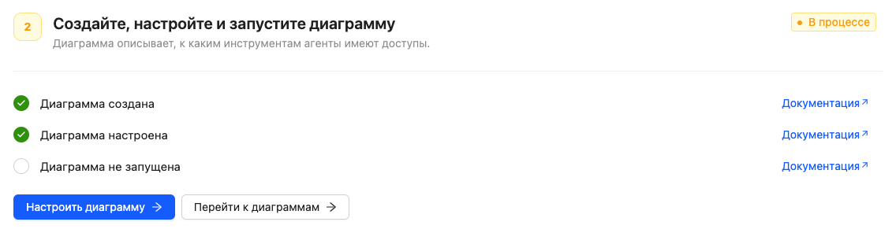
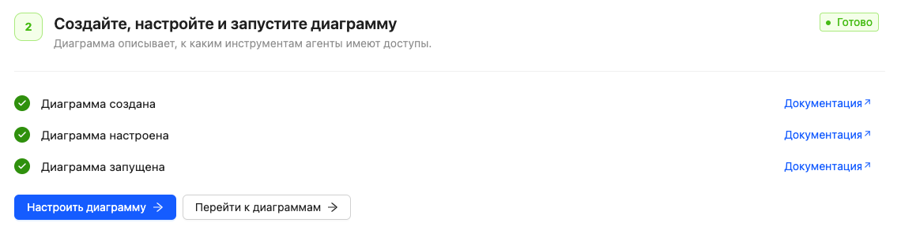
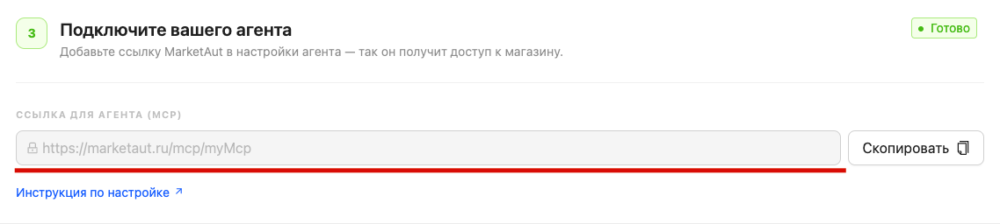

Домашняя страница
После регистрации и входа в MarketAut пользователь автоматически попадает на домашнюю страницу.

Домашняя страница помогает пройти первоначальную настройку системы и отображает текущий прогресс подключения.
На ней отображаются основные этапы настройки, которые необходимо выполнить перед подключением ИИ-агентов к магазину.
После успешного завершения каждого этапа соответствующие пункты будут отмечены зелёными галочками, а статус этапа изменится на Готово.
Домашняя страница предназначена для первоначальной настройки системы.
Для начала работы обычно достаточно создать один аккаунт и одну диаграмму.
Если в дальнейшем потребуется создать дополнительные аккаунты или диаграммы, это можно сделать в разделах Аккаунты и Диаграммы.
Статусы этапов
На домашней странице отображается текущий статус каждого этапа настройки:
- Не начато — настройка ещё не началась;
- В процессе — часть необходимых действий уже выполнена;
- Готово — этап успешно завершён.
После выполнения всех необходимых действий этап автоматически получает статус Готово и отмечается зелёными галочками.
Подключение аккаунта
Первым этапом необходимо подключить и настроить аккаунт Wildberries.
Если аккаунт ещё не создан или не настроен, домашняя страница отобразит соответствующие уведомления.

Для перехода к настройке используйте кнопку Перейти к аккаунтам или откройте раздел Аккаунты в меню платформы.
После успешного создания и настройки аккаунта все проверки будут отмечены зелёными галочками.

Для первоначальной настройки достаточно создать один аккаунт.
Если необходимо подключить несколько кабинетов Wildberries, дополнительные аккаунты можно создать в разделе Аккаунты.
Настройка диаграммы
После настройки аккаунта станет доступен следующий этап — создание диаграммы.
Диаграмма определяет, к каким инструментам и данным смогут обращаться подключённые ИИ-агенты.
Для перехода к настройке используйте кнопку Перейти к диаграммам или откройте раздел Диаграммы в меню платформы.
После создания диаграммы первый пункт будет отмечен как выполненный.

После настройки диаграммы будет отмечен следующий этап.

После запуска диаграммы все проверки будут успешно пройдены, а статус этапа изменится на Готово.

Для первоначальной настройки достаточно создать одну диаграмму.
Если потребуется создать дополнительные сценарии работы, отдельные наборы инструментов или несколько ИИ-агентов, дополнительные диаграммы можно создать в разделе Диаграммы.
Получение MCP-адреса
После успешного создания аккаунта и запуска диаграммы становится доступен MCP-адрес для подключения ИИ-агентов.

Нажмите кнопку Скопировать, чтобы получить MCP-адрес.
Этот адрес потребуется при подключении Claude, ChatGPT, Gemini и других ИИ-агентов к платформе MarketAut.
Что дальше?
После получения MCP-адреса перейдите в раздел Работа с ИИ и выберите используемого ИИ-агента.
Следуйте инструкции для выбранного сервиса, чтобы завершить подключение к MarketAut.